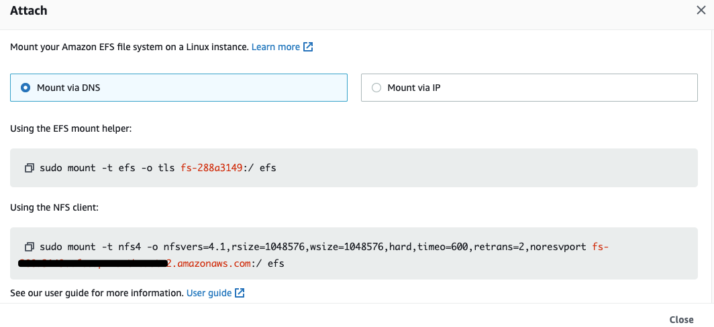
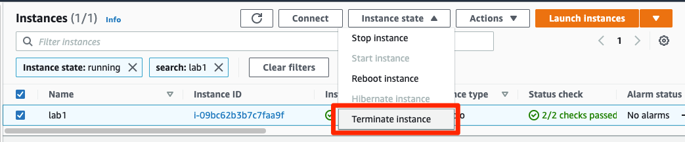
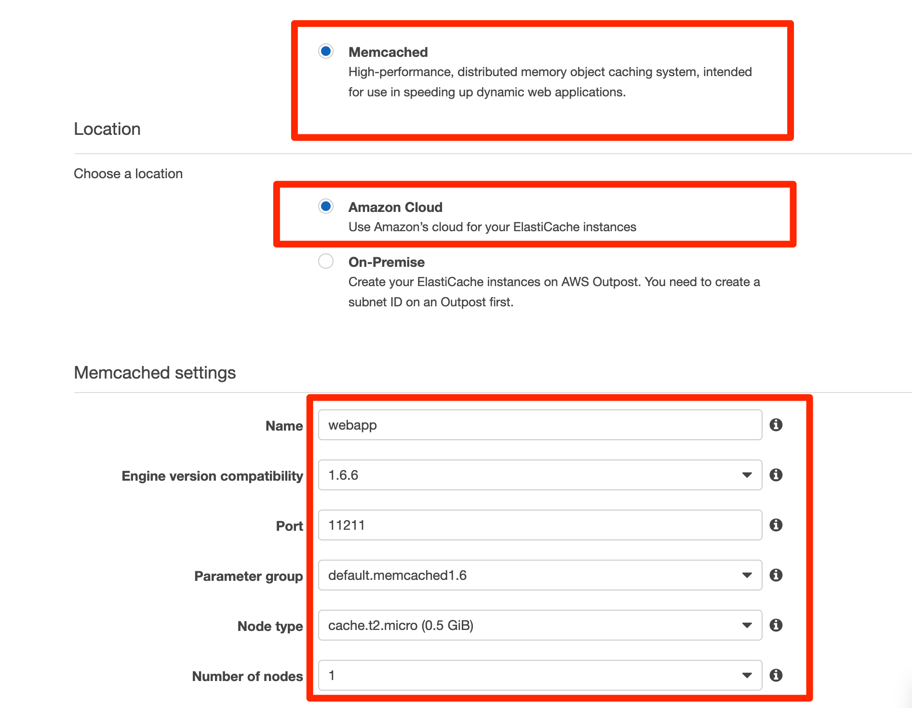
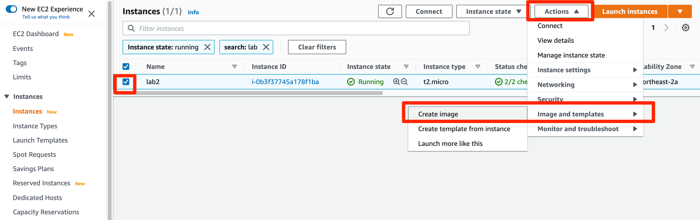
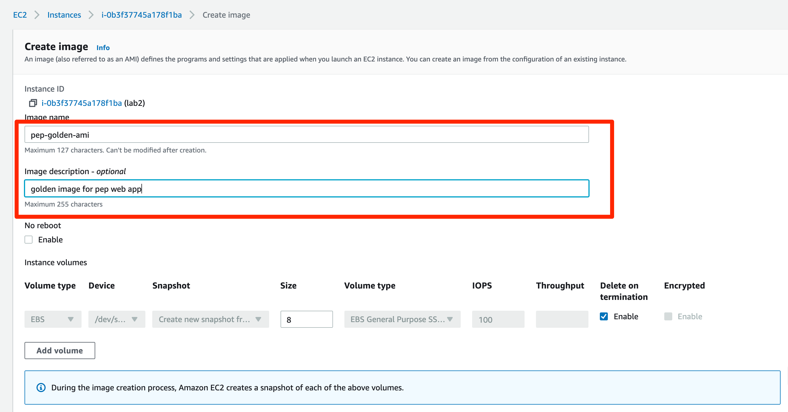

이번 레벨에서는 실습1 의 기본버전을 확장하여 여러 서버에 배포하고자 합니다. 파일 공유를 위해 NFS를 사용할 수도 있지만 (Amazon) EFS를 사용하면 쉽게 파일 공유 서비스를 사용할 수 있습니다.
Elastic File System 콘솔로 이동하여 EFS 파일 시스템을 생성합니다. (EFS 파일 시스템 생성후 DNS 이름을 메모해두시기 바랍니다. 다음 단계에서 해당 정보가 필요합니다.(Amazon EFS > File systems > -> Attach 버튼 클릭하여 DNS 확인) 
이전 단계에서 생성하여 실습했던 EC2 인스턴스가 이후 단계에서부터는 더이상 필요하지 않기 때문에 종료하시기 바랍니다. 
그리고 새롭게 EC2 인스턴스를 생성하시기 바랍니다. ( Launch a new EC2 instance with the Ubuntu 18.04 operating system. SSH into the EC2 instance to install the following software and mount the EFS file system:)
sudo apt-get updatesudo apt-get install nfs-commonsudo mkdir /efssudo mount -t nfs4 -o nfsvers=4.1,rsize=1048576,wsize=1048576,hard,timeo=600,retrans=2 <dns-endpoint-of-your-efs-file-system>:/ /efssudo chown -R ubuntu:ubuntu /efsThen we add the mounting stuff into /etc/fstab to add the following line, so that you do not need to manually mount the EFS file system when the operating system is rebooted.
<dns-endpoint-of-your-efs-file-system>:/ /efs nfs auto,rsize=1048576,wsize=1048576,hard,timeo=600,retrans=2 0 0
You can verify the above-mentioned configuration is working using the following commands (run them several times):
$ df -h
$ mount
$ sudo umount /efs
$ sudo mount /efs
Run the following commands to install Apache and PHP. Notice that we are not installing the MySQL server this time.
sudo apt-get install apache2 php mysql-client libapache2-mod-php php-mysql php-curl php-xml awsclisudo service apache2 startThen we use the EFS file system to store our web application.he EFS file system:
$ cd /efs
$ git clone https://github.com/qyjohn/web-demo
$ cd web-demo
$ sudo chown -R www-data:www-data uploads
$ cd /var/www/html
$ sudo ln -s /efs/web-demo web-demo
mysql -h [endpoint-of-rds-instance] -u <master username> -p
CREATE DATABASE web_demo;
CREATE USER 'username'@'%' IDENTIFIED BY 'password';
GRANT ALL PRIVILEGES ON web_demo.* TO 'username'@'%';
quit
$ cd /var/www/html/web-demo
$ mysql -h [endpoint-of-rds-instance] -u username -p web_demo < web_demo.sql
We use ElastiCache to resolve the session sharing issue between multiple web servers. In the ElastiCache console, launch an ElastiCache cluster with Memcached (just 1 single node is enough) and obtain the endpoint information. Please make sure that the security group being used on the ElastiCache cluster allows inbound connection from your EC2 instance. 
On the web server, configure php.ini to use Memcached for session sharing.
Edit /etc/php/7.2/apache2/php.ini. Make the following modifications:
session.save_handler = memcached
session.save_path = "[dns-endpoint-to-the-elasticache-node]:11211"
Then you need to restart Apache the web server to make the new configuration effective.
$ sudo apt-get install php-memcached
$ sudo service apache2 restart
Edit /etc/php/7.2/mods-available/memcached.ini, add the following two lines to support session redundancy. Please note that the value of memcache.session_redundancy equals to the number of cache nodes plus 1 (because of a bug in PHP).
memcache.allow_failover=1
memcache.session_redundancy=2
Then you need to restart Apache the web server to make the new configuration effective.
$ sudo apt-get install php-memcache
$ sudo service apache2 restart
Now, create an AMI from the EC2 instance and launch a new EC2 instance with the AMI.
 
Create an Application Load Balancer (ALB) and register the two EC2 instances to the ALB target group. Since we do have Apache running on both web servers, you might want to use HTTP as the ping protocol with 80 as the ping port and “/” as the ping path for the health check parameter for your ELB.
In your browser, browser to http://elb-endpoint/web-demo/index.php. As you can see, our demo seems to be working on multiple servers. This is so easy!